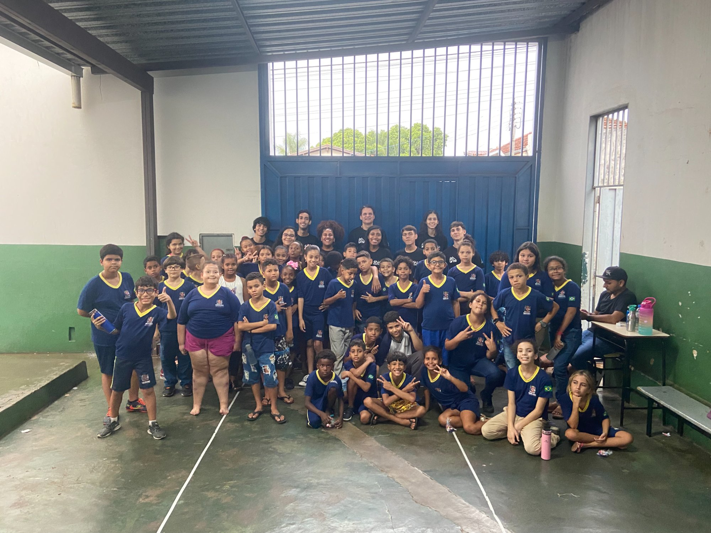
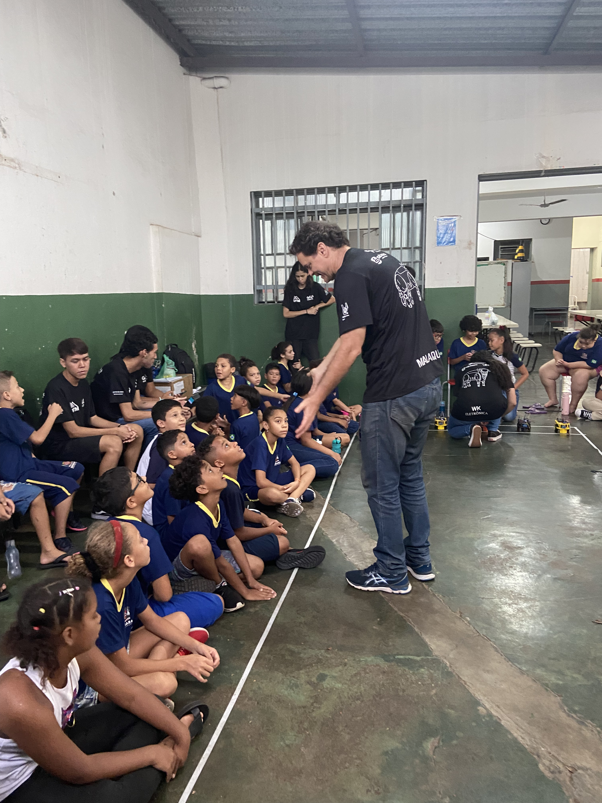
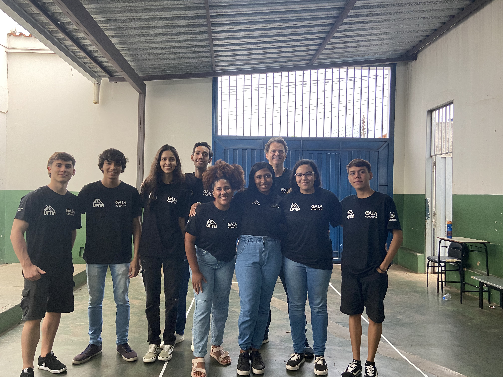
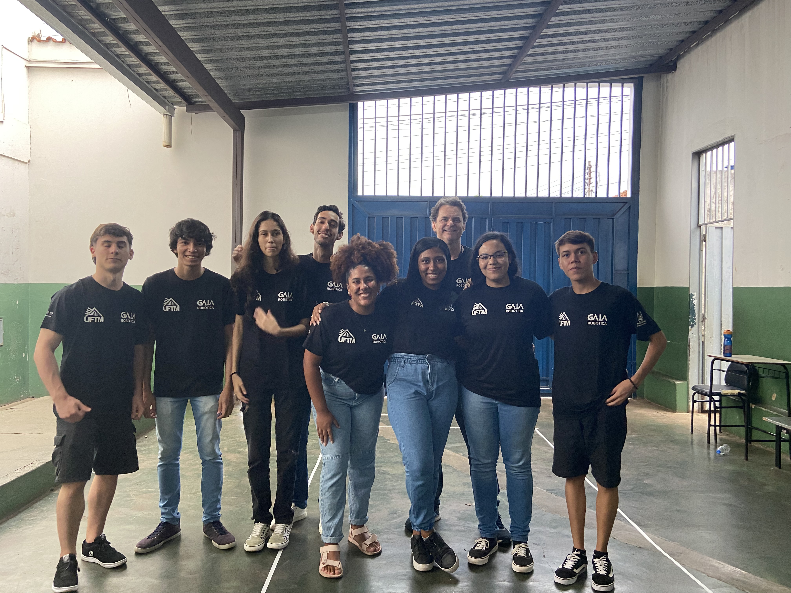
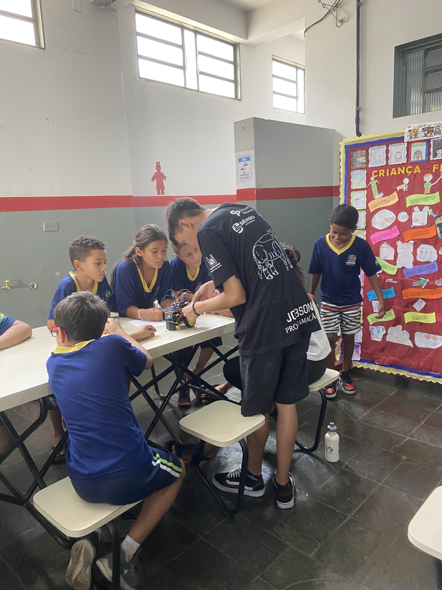

Acreditamos que a universidade pública deve devolver à sociedade o investimento que recebe. Por isso, a conquista mais valiosa do GAIA Robótica não é medida em troféus de competições, mas no número de jovens impactados pelo nosso projeto de extensão.
"A próxima geração de grandes engenheiros e cientistas está nas escolas públicas. Nosso objetivo é ser a faísca que acende a curiosidade por exatas e tecnologia."
Ação com Foco no Aprendizado
Durante as nossas visitas às escolas de Uberaba e região, o nosso foco não é apenas fazer uma demonstração passiva, mas sim proporcionar uma experiência de aprendizado ativo. Levamos kits educacionais e robôs baseados em plataformas acessíveis (como o Arduino e LEGO EV3) para que os estudantes possam interagir fisicamente com a tecnologia.
A nossa metodologia procura desmistificar a programação. Mostramos aos alunos que escrever linhas de código não é algo restrito a génios, mas sim uma forma de ensinar uma máquina a pensar e a resolver problemas reais do dia a dia.

Robôs autônomos prontos para a demonstração na pista.
Carros de Linha: A Magia da Lógica
Uma das atividades que mais brilham os olhos dos alunos é a demonstração dos nossos robôs seguidores de linha (Line Followers). Estes carrinhos autônomos são a introdução perfeita à robótica móvel, pois permitem visualizar o código em ação de forma imediata.
Explicamos na prática como os sensores infravermelhos funcionam como os "olhos" do robô, detetando o contraste entre a fita de marcação escura e o chão claro. A partir daí, demonstramos como a lógica condicional (o famoso "se isso, então aquilo") aliada a algoritmos básicos faz com que os motores corrijam a trajetória do veículo em tempo real. É o momento exato em que a teoria matemática e lógica se converte em movimento físico.








A Força da Nossa Equipe
Nada disto seria possível sem a dedicação genuína dos membros do GAIA Robótica. Estudantes de engenharia da UFTM doam o seu tempo para atuar não apenas como monitores, mas como mentores inspiradores para crianças e adolescentes.
Essa interação é uma verdadeira via de mão dupla: enquanto os alunos das escolas descobrem um novo mundo de possibilidades profissionais nas áreas de tecnologia e inovação, os membros da nossa equipa desenvolvem competências interpessoais essenciais. Em cada visita, aprimoramos a oratória, o trabalho em equipa, a liderança, a empatia e a capacidade crítica de traduzir termos de engenharia complexos para uma linguagem simples e cativante.